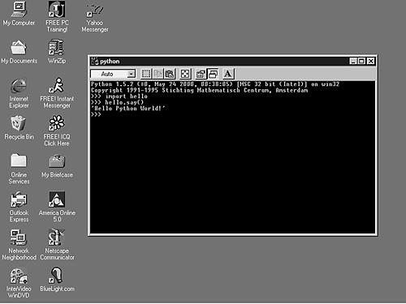

| < BACK | Make Note | Bookmark | CONTINUE > |
Extending
Because Python cannot access C/C++ functions in a straightforward way, it is necessary to handle the conversion between Python and C/C++ data types when putting them to work together. That is when we use the Python extension modules. These extensions work like a thin wrapper of functions written in C/C++ that are necessary to bring the C/C++ functionality to the developer.
It is widely known that interpreted languages execute intensive applications slower than compiled languages. As a result, it is a good choice to implement as extension modules the application routines that need to run fast, such as network access, database manipulation, and routines that intensively use the graphical interface.
Keep in mind that you always have to think about whether it is really necessary to implement routines as extension modules. Are you sure that the processing speed will get better by calling C functions instead of just using plain Python?
Before starting to implement anything in C, I suggest that you analyze and test your Python code. Check to see whether it can be optimized. Profile it, and only if you find some big problem, create C extensions. As an example, if you have the execution time of a function that only accounts for 1% of the program execution time, you have only reduced total execution time by 0.5%.
And remember, before you implement some surreal extension, to first check the Python distribution and the contributed modules. What you need might already be there.
Some good links to where you can check for existing modules are
The Python contributed modules page at
http://www.python.org/download/Contributed.html
The Vaults of Parnassus collection of Python resources at
http://www.vex.net/~x/parnassus/
The extension modules should be used to write specific operations, and not complete applications. By doing this, you will spend less time developing the wrapping interfaces.
The next two links provide a good source of information about writing an extension module:
"How to Write a Python Extension," by Michael P. Reilly:
http://starship.python.net/crew/arcege/extwriting/pyext.html
"Extension Classes, Python Extension Types Become Classes," by Jim Fulton:
Creating New Extensions
I presume that if you came this far, you are sure that you want to use extension modules. So, let's start developing something.
First, in many places, you will see the naming convention for extension module files defined as modulenamemodule. c. Second, all extension modules must include the Python/C API "<Python.h>" system header file.
The next example is an extension module called helloworldmodule.c that is used to demonstrate how easy it is to create a Python extension.
/* File: helloworldmodule.c */
#include "<Python.h>"
/* external function*/
static PyObject *sayhello(PyObject *self)
{
return Py_BuildValue("s","Hello Python World!");
}
/* name binding table */
static PyMethodDef hellomethods[] = {
{"say", sayhello, METH_VARARGS },
{NULL, NULL} /* sentinel */
};
/* initialization function*/
DL_EXPORT(void) inithello()
{
Py_InitModule("hello", hellomethods);
}
After linking this module to your interpreter, it becomes promptly accessible for your use (see Figure 6.1).
Figure 6.1. As you can see, there is no difference between the way you use an extension module and the other modules.
It is important to stick to the naming convention because when the module is first imported, the initmodulename() function is called.
Every time you implement a C function that Python will call, you have to define two arguments. The first one is called self, and it is a pointer to the called object. The argument self is used when implementing built-in methods to point to the bound object. When a function is implemented, self is set to NULL.
The other argument is usually called args, which is a pointer to a tuple object that contains the arguments of the function.
Check out another example. This one passes arguments between Python and C.
/* File: systemmodule.c*/
#include "<Python.h>"
static PyObject *system_command(PyObject *self, PyObject *args)
{
int return_status;
char *program;
char *argument;
static char statement[255];
if (!PyArg_ParseTuple(args, "ss", &program, &argument))
return NULL;
sprintf(statement, "%s %s", program, argument);
return_status = system(statement);
return Py_BuildValue("i", return_status);
}
static PyMethodDef systemmethods[] = {
{"command", system_command, METH_VARARGS},
{NULL, NULL}
};
DL_EXPORT(void) initsystem() {
Py_InitModule("system", systemmethods);
}
The next set of instructions calls the command() function that is part of the system module, which is stored in the systemmodule.c file.
>>> import system
>>> system.command("dir","|more")
All interface items are Python objects. Thus, function arguments and return values are pointers to PyObject structures. PyObjects are C representations of real Python objects. All PyObjects have a reference count.
You shouldn't declare a variable of type PyObject. Instead, you have to declare PyObject * pointers to the actual storage of the object. Because all Python objects have a similar behavior, they can be represented by a single C type (PyObject *). Note that a variable of type PyObject can be defined, but it won't be of much use.
In order to implement basic extensions, you essentially use the following commands:
PyArg_ParseTuple(args, format, arg1 [, arg2 [,…]])—Checks the argument types and converts them to C values. It returns a true value when the checking and the conversion doesn't return any errors.
PyArg_ParseTuple—Used to parse the PyObject that contains the function arguments (args). The second argument is a format string that lists the object types that you expect to collect, and all the other arguments are pointers to be filled with values from the parsing operation. Note that you can add the function name to the format string to make error messages a bit more informative.
Py_BuildValue(format, Cvar1 [, Cvar2 [,…]])—Converts C objects into Python Objects based on the formatting string. Py_BuildValue is mostly used when it is necessary to return values to the Python interpreter.
Tip
C functions that return a void argument must return the Python type called None.
Py_INCREF(Py_None); return Py_None;
For this other example, let's create a function that takes two Python objects and returns a pointer to a Python object.
/* File: divisionmodule.c*/
#include "<Python.h>"
static PyObject *division_function(PyObject *self, PyObject *args)
{ PyObject *result = NULL;
long a, b;
if (PyArg_ParseTuple(args, "ii", &a, &b)) {
result = Py_BuildValue("i", a / b);
}
return result;
}
static PyMethodDef divisionmethods[] = {
{"divide", division_function, METH_VARARGS},
{NULL, NULL},
};
DL_EXPORT(void) initdivision()
{
Py_InitModule("division", divisionmethods);
}
Importing an Extension Module
As you could see in the previous example, in order to allow Python to import your module, a few steps are required.
-
Step 1.
Create a method array. Each element of this array is a structure that contains: the function's name to be exported to the Python interface, the C function's name and a indicator that shows how arguments must be passed. Each function of the module to be exported to Python must be an element in this array. Note that the last element of the array works as a sentinel, and it must contain NULLs.
static PyMethodDef systemmethods[] = { {"command", system_command, METH_VARARGS}, {NULL, NULL} };The third argument of each array entry can beMETH_VARARGS means that the arguments are in a tuple format.METH_VARARGS | METH_KEYWORDS indicates that keyword arguments are also allowed. It will just pass a NULL for the extra argument if no keyword arguments are given.The modulenamemethods[] array has a fourth optional element, which is a documentation string.
-
Step 2.
Create the initialization function of the module. This function should be declared as non-static. All the others should be defined as static in order to avoid name conflicts with other modules.
The initmodulename() function is automatically called by the interpreter. The DL_EXPORT() definition is used to expose the module entry point. Note that the DL_EXPORT macro only does something on the Win32 platform.
DL_EXPORT(void) initsystem() { Py_InitModule("system", systemmethods);
In this example, the Py_InitModule creates a "system" module object based on the array systemmethods.
You can verify that by checking the sys.modules dictionary after importing the extension module.
Formatting Strings
Whenever you use the PyArg_ParseTuple() or the Py_BuildValue() function, you must follow a mechanism that is based on some formatting tables, which are mentioned next, in order to make the correct conversion between Python types and C types.
Both functions check the arguments type by looking at a formatting string. All the elements of the formatting string must match in type and number with the variables that are also part of the function's list of arguments.
Sometimes, it isn't strictly necessary to have both sides (C and Python) matching in type. The reality is that the receiving field only has to be big enough to fit the received value; hence, the Python type called float is easily stored by a C double variable. Of course, using a C type that doesn't match the format character will cause problems that might only affect some platforms.
The literals |, :, and ; have special meanings when placed inside a formatting string.
|— The remaining arguments in the formatting string are optional. The C variables will keep their original values in case they aren't assigned to any arguments. You should make sure that the variables are initialized for optional arguments.
:— The string after the colon is the function name to be called in case of error messages.
;— The string after the semicolon is the user error message that must substitute for the original error message.
Tip
A given formatting string must contain only one |with : or ; because : and ; are mutually exclusive.
Table 6.1 covers all the elements that can be part of a PyArg_ParseTuple's formatting string. Just to remind you, PyArg_ParseTuple() is used to convert Python objects into C objects.
Note
Using anything other than the given types could very easily cause problems on some architectures.
If the Python object is a tuple, the number of matching variables passed to the C function must be equal to the number of formatting elements informed. A tuple is indicated in the formatting string by placing the formatting elements between parenthesis.
The Py_BuildValue function is used to return values to the Python program that has called the extension module. Its functionality is similar to PyArg_ParseTuple.
This function doesn't create a tuple of one element automatically, unless you enclose the single formatting element in parentheses.
Table 6.2 covers the Py_BuildValue function and all the elements that can be part of its formatting string. Just to remind you, this function is used to convert C objects into Python objects.
The following list complements the previous table by showing how Python tuples, lists, and dictionaries are generated.
Matching items between parenthesis are converted into a Python tuple.
Matching items between square brackets are converted into a Python list.
Matching items between curly braces are converted into a Python dictionary. Each consecutive pair of values forms a dictionary entry in the format (key, value).
Exporting Constants
In addition to methods, you can also export constants back to Python. You just need to bind the constant name to the module namespace dictionary.
/* File: pimodule.c*/
#include "<Python.h>"
static PyMethodDef pimethods[] = {
{NULL, NULL}
};
DL_EXPORT(void)
initpi()
{ PyObject *module, *dictionary;
PyObject *pivalue;
module = Py_InitModule("pi", pimethods);
dictionary = PyModule_GetDict(module);
pivalue = PyFloat_FromDouble(3.1415926);
PyDict_SetItemString(dictionary, "pi", pivalue);
Py_DECREF(pivalue);
}
Error Checking
You must indicate errors in your extension module by returning NULL to the interpreter because functions signal errors by returning NULL. If your function has no return at all, you need to return the None object.
return Py_BuildValue("");
or
Py_INCREF(Py_None); return Py_None;
In case you need to raise an exception, you can do that prior to the return NULL statement. Note that returning NULL without raising an exception is bad.
Handling Exceptions
Exceptions work as functions in the Python/C API. For example, to raise an IndexError exception, you just need to call PyExc_SetString() prior to the return NULL statement.
Extension modules also support the creation of new exception types.
/* File: testexceptionmodule.c*/
#include "<Python.h>"
static PyObject *exception = NULL;
static PyMethodDef testexceptionmethods[] = {
{NULL, NULL}
};
DL_EXPORT(void)
inittestexception()
{ PyObject *module, *dictionary;
module = Py_InitModule("testexception", testexceptionmethods);
dictionary = PyModule_GetDict(module);
exception = PyErr_NewException("testexception.error", NULL, NULL);
PyDict_SetItemString(dictionary, "error", exception);
}
If you need to raise your just-created exception, just call it:
PyErr_SetString(exception, "I could not do that");
Check Appendix A for more information about the Python/C API exception functions, including how to handle threads in your extensions.
Reference Counting
We all know that programmers are responsible for dynamic memory allocation and deallocation in C and C++.
However, Python extensions don't benefit from all the security provided by the Python runtime system. There are a lot of things that you have to be worried about. The main thing is reference counting.
The core Python counts references to every Python object that is created, which enables it to deallocate an object when it doesn't have any more references.
If an object's reference count reaches 0, this object is marked for deallocation. If this same object references other objects, their references are decremented too. The code for deallocating referenced objects occurs in the object destructor.
The counter is incremented when a reference to the object is created, and it is decremented when the reference is deleted. If the reference count becomes zero, the object is released. That's how Python works.
However, Python extensions don't have this functionality built in. You have to increment (Py_INCREF) and decrement (Py_DECREF) the references by yourself.
You can be sure that your reference counting is wrong if your system crashes when you either return a value from the extension module or when you exit the application.
Too few Py_INCREFs can cause the application to freeze at an unspecific time, whereas too few Py_DECREFs cause memory leaks that drive the application to use more and more memory for the process.
An object reference count is defined as the number of owned references to it. The owner of a reference is responsible for calling Py_DECREF(). It is also possible to borrow a reference to an object. The borrower should neither call Py_DECREF() nor use the reference after the reference owner has disposed of it. If you are borrowing a reference, make sure that you are absolutely certain the owner will not release the reference while you are using it.
To make a borrowed reference to become an owned reference, you just need to call Py_INCREF() for the mentioned object.
Take a look at following lines of code:
PyObject *O;
if (! PyArg_ParseTuple(args, "O", &O)) return NULL;
You don't need to call Py_DECREF() before leaving the module that implements this kind of code because PyArg_ParseTuple() returns borrowed references, and releasing references that you don't own can cause you severe problems. Py_INCREF and Py_DECREF are implemented as macros, so only pass a variable as the argument because the argument is evaluated twice after macro expansion.
Python Official Documentation—Reference Counts
http://www.python.org/doc/current/api/refcounts.html
"Debugging Reference Count Problems," by Guido van Rossum
http://www.python.org/doc/essays/refcnt.html
Building Extensions in C++
Python has a C-based interpreter, and it becomes a bit harder to adjust code to compile it as C++ because Python has some restrictions when it comes to creating extension modules using C++. However, there are some things that you can do in order to reduce your problems. The next hints will help you to link Python to a C++ compiler.
The problems depend on the C++ compiler that you are using. However the most common ones are discussed in the following paragraphs.
If the Python interpreter is compiled and liked by a C compiler, you cannot use global or static C++ objects with constructors. Unless you use a C++ compiler. But, you can initialize the globals in the module's init function instead.
You need to place extern "C" { … }around the Python include files. You need to define the Python API as a C segment to the C++ compiler as well.
extern "C"{
#include "<Python.h>"
}
If the header files for Python on your machine already include the extern "C" { … }stuff, adding an extra extern "C" block will cause an error on most compilers (as the extern "C" syntax is not valid C).
Functions that are going to be called by the interpreter (in particular, module initialization functions) have to be declared using extern "C".
extern "C" {
DL_EXPORT(void)
initmodulename()
{
Py_InitModule("modulename", modulename_methods);
}
}
This same declaration could also be written as
extern "C" DL_EXPORT(void)
initmodulename()
{
Py_InitModule("modulename", modulename_methods);
You have these same concerns when building a dynamic module. In fact, there are more concerns (for instance, the DL_EXPORT stuff isn't required if the module is statically linked to the interpreter).
You can use Python to access many C++ class libraries. You just need to have the right wrapper that provides the necessary access to the libraries.
Tip
When embedding Python in your C++ code, it isn't necessary to recompile Python itself using C++. However, if you want to use C++ extension modules, the Python interpreter might have to be compiled with a C++ compiler though recent Linux distributions should work fine without a recompile.
For more information, check out
"Binding Python to C++," by Guido van Rossum
| Last updated on 1/30/2002 Python Developer's Handbook, © 2002 Sams Publishing |
| < BACK | Make Note | Bookmark | CONTINUE > |